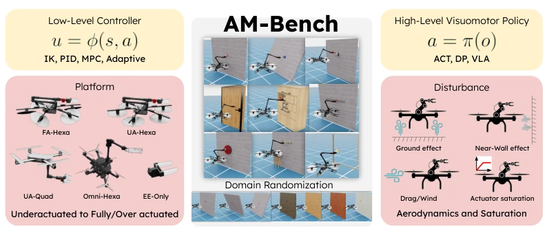
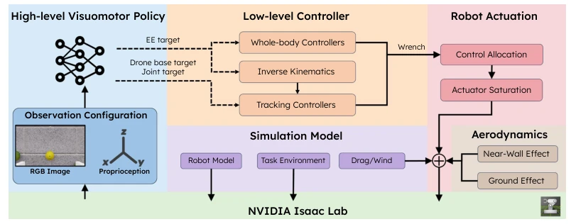
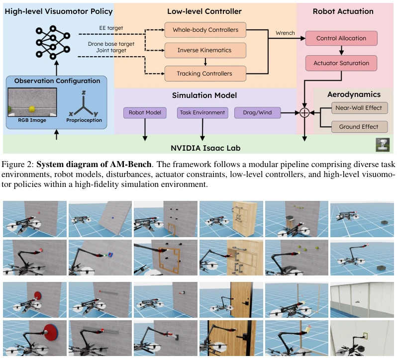
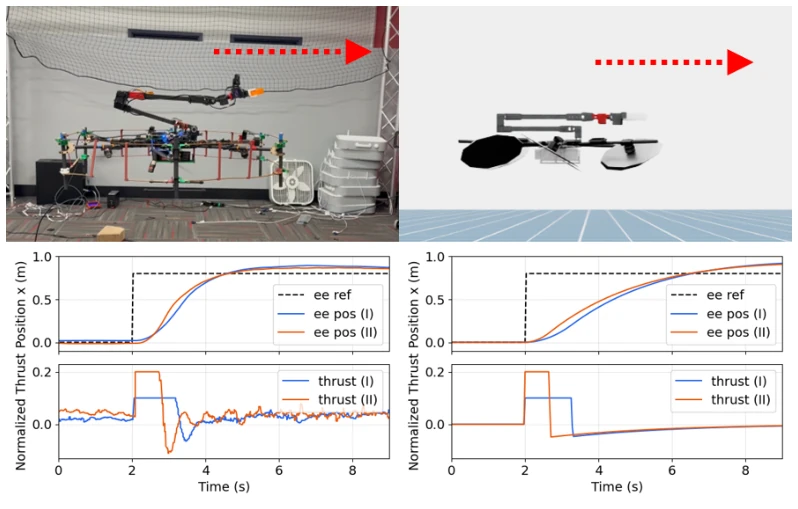

This paper brings a timely relief to the field of aerial manipulation (AM), given that previous benchmarks mostly focused on ground robots, overlooking the complex dynamics of aerial operations. The highlight of AM-Bench is its modularity, separating the robot body, controller, policy, and disturbances, facilitating ablation studies; this is far superior to those black-box end-to-end evaluations. However, a critique: although claiming system-level evaluation, it is essentially simulation-based, with real-world wind fields and motor delays simplified excessively, and it only supports single-robot rigid arms, remaining insufficient for more complex soft or cooperative operations. Overall, it is a useful tool, but do not expect it to directly solve all sim-to-real challenges, after all, the wind in simulation is not as strong as real wind.
研究动机Motivation
空中操作（AM）面临独特的挑战，比如环境扰动（风、近墙效应）、浮体与机械臂的耦合动力学，以及执行器饱和 [13]。现有的机器人学习基准（如 RoboCasa [5], ManiSkill [36]）主要关注地面或桌面场景，忽略了 AM 中低层控制对高层策略的强约束。虽然有一些 AM 相关工作 [12, 11]，但缺乏标准化的系统级评估框架，难以隔离本体、控制和策略的影响。Suarez 等人 [47] 提出了硬件基准，但未包含仿真策略评估。AIR-VLA [48] 侧重 VLA 推理，未深入控制接口。因此，需要 AM-Bench 来系统评估这些因素的交互，填补 AM 学习基准的空白。
Aerial manipulation (AM) faces unique challenges, such as environmental disturbances (wind, proximity effects), coupled dynamics of the floating body and manipulator, and actuator saturation [13]. Existing robot learning benchmarks (e.g., RoboCasa [5], ManiSkill [36]) primarily focus on ground or tabletop scenarios, ignoring the strong constraints of low-level control on high-level policies in AM. Although there are some AM-related works [12, 11], there is a lack of standardized system-level evaluation frameworks, making it difficult to isolate the effects of the robot body, control, and policy. Suarez et al. [47] proposed a hardware benchmark, but did not include simulation policy evaluation. AIR-VLA [48] focuses on VLA reasoning, without delving into control interfaces. Therefore, AM-Bench is needed to systematically evaluate the interaction of these factors, filling the gap in AM learning benchmarks.

Figure 1: Overview of AM-Bench: AM-Bench is designed to systematically evaluate aerial manipulation along several dimensions: (left) robot platforms, including underactuated (UA-Quad, UA-Hexa), fully actuated (FA-Hexa), and overactuated (Omni-Hexa) systems, together with different low-level controllers; (center) a diverse suite of manipulation tasks with domain randomization in spatial poses and textures; and (right) various visuomotor policy architectures and realistic physical constraints, including aerodynamic disturbances (ground and near-wall effects) and actuator saturation. u, ϕ(·, ·), s, a, π(·), and o denote the control input, controller, state, high-level action, policy, and observation, respectively.
方法Method
AM-Bench 基于 NVIDIA Isaac Lab 构建，采用五模块架构：任务环境、机器人平台、高层策略接口、低层控制、物理扰动与约束。1. 任务环境：包含 12 个任务，分为瞬时交互（如按按钮）、物体运输（如柠檬采摘）和受限接触（如开门），支持域随机化 [3]。2. 机器人平台：支持欠驱动（UA-Quad, UA-Hexa）、全驱动（FA-Hexa）和过驱动（Omni-Hexa）四种构型，覆盖真实 AM 系统 [12, 24]。3. 策略接口：支持 EE Target 和 Base+Arm Joint Target 两种高层动作空间，兼容 IL 和 VLA 模型（如 pi0）[60, 61]。4. 低层控制：集成 PID、MPC、L1 自适应控制，处理浮体与机械臂的协调 [15, 51]。5. 扰动模型：包含地面效应、近墙效应、空气阻力和执行器饱和，采用简化气动模型而非 CFD 以保证效率 [52, 53]。数据流从高层策略输出动作，经低层控制器映射为电机指令，再受物理扰动影响反馈状态。控制分配层将机身力矩映射为旋翼推力，并考虑饱和与响应延迟。
AM-Bench is built upon NVIDIA Isaac Lab, adopting a five-module architecture: task environment, robot platform, high-level policy interface, low-level control, and physical disturbances and constraints. 1. Task Environment: Contains 12 tasks, categorized into transient interaction (e.g., button pressing), object transport (e.g., lemon picking), and constrained contact (e.g., door opening), supporting domain randomization [3]. 2. Robot Platform: Supports underactuated (UA-Quad, UA-Hexa), fully actuated (FA-Hexa), and overactuated (Omni-Hexa) four configurations, covering real AM systems [12, 24]. 3. Policy Interface: Supports EE Target and Base+Arm Joint Target two high-level action spaces, compatible with IL and VLA models (e.g., pi0) [60, 61]. 4. Low-level Control: Integrates PID, MPC, and L1 adaptive control, handling the coordination of the floating body and manipulator [15, 51]. 5. Disturbance Model: Includes ground effect, proximity effect, air resistance, and actuator saturation, adopting a simplified aerodynamic model rather than CFD to ensure efficiency [52, 53]. The data flow outputs actions from the high-level policy, maps them to motor commands via the low-level controller, and then feeds back the state affected by physical disturbances. The control allocation layer maps body torque to rotor thrust, considering saturation and response delay.

Figure 2: System diagram of AM-Bench. The framework follows a modular pipeline comprising diverse task environments, robot models, disturbances, actuator constraints, low-level controllers, and high-level visuomo- tor policies within a high-fidelity simulation environment.
Experiments addressed four questions: policy performance, control interface, body influence, and real-world transfer. 1. Policy: VLA (pi0.5) fine-tuned performance outperforms IL (DP), but zero-shot performance is poor, indicating the existence of a domain gap [60, 61]. 2. Interface: The EE Target interface combined with the MPC controller achieves the highest success rate; directly controlling joint targets leads to instability [Table 3]. 3. Body: The fully actuated FA-Hexa is more stable in contact tasks than the underactuated UA-Hexa; the latter requires tilting the body to produce lateral motion [Table 4]. 4. Real: The ground effect model significantly reduced sim-to-real error (48%), and the lemon picking task was successfully deployed on FA-Hexa [Fig 5, Fig 6]. Findings indicate that the decoupling design of high-level policy and low-level control is crucial for AM, and simulation models provide significant assistance for real-world transfer.

Figure 3: Twelve representative tasks. Top row: press button, peg-in-hole, frame assembly, cabinet pick-and- place, lemon harvesting, and toss ball. Bottom row: rotate valve, push slider, pull lever, open door, wipe window, and NDT.
其他图片Other Figures

Figure 7: Real-world and simulated aerial-manipulator step responses under two wrench-space limits, denoted I and II.